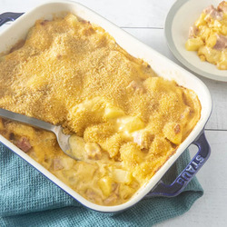

Casserole

Leftover Ham and Potato Casserole
This easy, cheesy ham and potato casserole uses up leftover Christmas or Easter ham! It's perfect for a post-holiday breakfast or an easy weeknight dinner. My family looks forward to this classic combination.
Ingredients
- 6 small potatoes, peeled and cut into 1/2-inch cubes
- 7 tablespoons butter, divided
- 2/3 pound leftover cooked ham, cut into 1/2-inch cubes
- 1 small onion, finely chopped
- 3 tablespoons all-purpose flour
- 1 1/2 cups milk
- salt and ground black pepper to taste
- 1 (8 ounce) package shredded Cheddar cheese
- 1/4 cup bread crumbs
Steps
- Place potatoes into a large pot and cover with salted water; bring to a boil. Reduce heat to medium-low and simmer until tender, 10 to 15 minutes.
- Meanwhile, preheat the oven to 350 degrees F (175 degrees C). Grease a 1 1/2-quart baking dish.
- When the potatoes are almost finished, melt 3 tablespoons butter in a skillet over medium heat. Add ham and onion; cook and stir until the onion has softened and turned translucent, about 5 minutes. Remove from the heat.
- Drain potatoes; add to the ham mixture and stir to combine. Transfer to the prepared baking dish.
- Melt remaining 4 tablespoons butter in a saucepan over medium heat. Whisk in flour and stir until the mixture becomes paste-like and light golden brown, about 5 minutes.
- Gradually whisk milk into the flour mixture; season with salt and black pepper. Continue cooking and stirring until thickened, about 2 minutes. Reduce heat to medium-low and stir in Cheddar cheese until melted.
- Pour cheese sauce over ham and potatoes. Sprinkle bread crumbs over top.
- Bake in the preheated oven until sauce is bubbly and browned, 25 to 30 minutes.